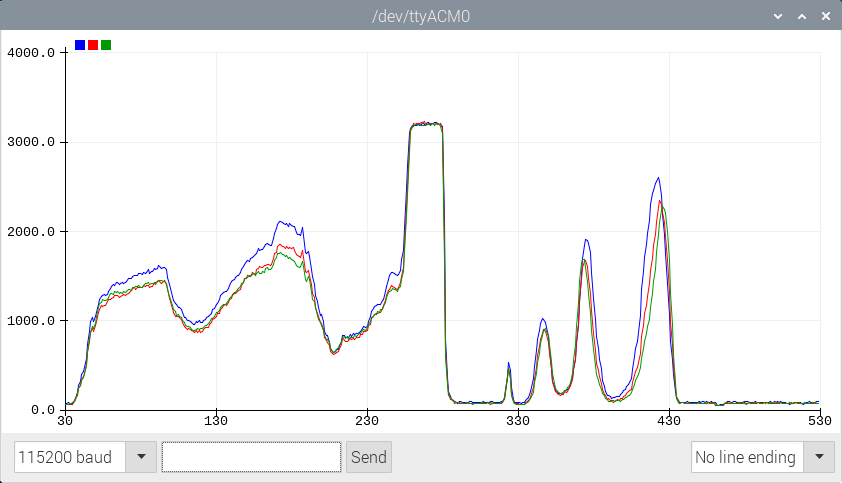
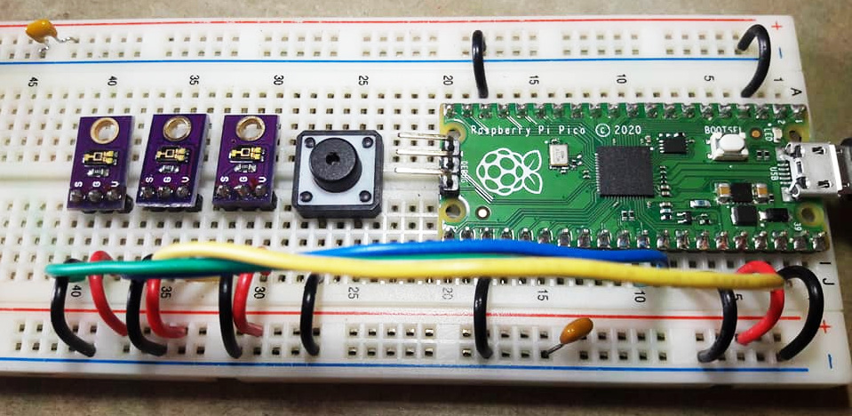
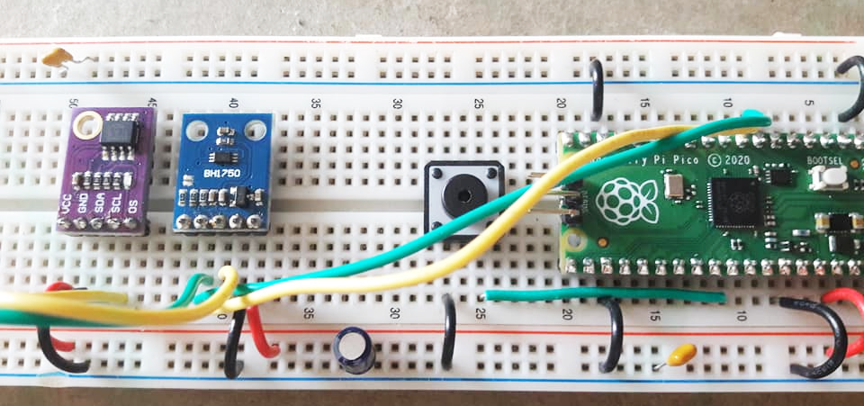

ARM Mbed OS for Raspberry Pi Pico RP2040: Code Examples (Part 2)#
เนื้อหาในส่วนนี้สาธิตการเขียนโค้ดโดยใช้ Mbed OS และ Arduino IDE สำหรับบอร์ดไมโครคอนโทรลเลอร์ที่ใช้ชิป RP2040 เช่น Raspberry Pi Pico โดยนำเสนอเป็น ตอนที่ 2 ต่อจาก ตอนที่ 1
Keywords: Mbed OS, Raspberry Pi Pico, RP2040, Mbed-enabled Platforms, RTOS Programming
▷ การใช้งาน ADC เพื่ออ่านค่าจากสัญญาณแอนะล็อก#
ไมโครคอนโทรลเลอร์ RP2040 มีวงจร ADC (Analog-to-Digital Converter) อยู่ภายในที่ใช้แปลงสัญญาณแอนะล็อก หรือแรงดันไฟฟ้าที่เป็นอินพุต ให้เป็นข้อมูขนาด 12 บิต
บนบอร์ด Pico มีขา {GP26, GP27, GP28} สำหรับอินพุตช่อง
{ADC0, ADC1, ADC2} ตามลำดับ แต่ยังมีช่องอินพุต ADC3 และ ADC4
สำหรับวัดแรงดันไฟฟ้าที่ขา VSYS (ได้ค่าที่ถูกหารด้วย 3) และจากวงจรเซ็นเซอร์วัดอุณหภูมิภายในชิป ตามลำดับ
ลองมาดูตัวอย่างโค้ด Arduino Sketch ที่ใช้คำสั่ง analogRead(...) ของ Arduino API
เพื่ออ่านค่าจาก ADC3 หรือขา GP29 (ไม่มีอยู่บนบอร์ด Pico) สำหรับวัดระดับแรงดันไฟฟ้าที่ขา VSYS
และในตัวอย่างนี้ได้กำหนดให้ค่าที่อ่านได้จาก ADC มีขนาด 12 บิต
ในกรณีที่ใช้ VUSB (ประมาณ +5V) เป็นแหล่งจ่ายแรงดันไฟเลี้ยงให้บอร์ด Pico
ระดับแรงดันไฟฟ้าที่ขา VSYS จะต่ำกว่า VUSB ประมาณ 0.2V
// The GPIO29 pin on the Pico board is used
// in ADC mode (ADC3) to measure VSYS/3.
#define ADC_PIN (A3)
#define ADC_BITS (12) // use 12-bit ADC value
#define ADC_VREF (3.3)
void setup() {
SerialUSB.begin( 115200 );
while(!SerialUSB){}
analogReadResolution( ADC_BITS );
}
float read_adc_vsys() {
uint32_t value = analogRead(ADC_PIN);
float volt = ADC_VREF*value/(1 << ADC_BITS);
return 3*volt;
}
String strbuf;
void loop() {
strbuf = "Voltage at VSYS Pin: ";
strbuf += read_adc_vsys();
strbuf += " V";
SerialUSB.println( strbuf.c_str() );
delay(500);
}
หรือจะเขียนโดยใช้ AnalogIn
ของ Mbed Drivers ก็ได้เช่นกัน
#include "mbed.h"
using namespace mbed;
#define ADC_VREF (3.3)
// The GPIO29 pin on the Pico board is used
// in ADC mode (ADC3) to measure VSYS/3.
AnalogIn ain(p29); // GP29 = ADC3
void setup() {
SerialUSB.begin( 115200 );
while(!SerialUSB){}
}
float read_adc_vsys() {
uint32_t value = ain.read_u16();
float volt = ADC_VREF*value/65536;
return 3*volt;
}
std::string strbuf;
void loop() {
strbuf = "Voltage at VSYS Pin: ";
strbuf += std::to_string( read_adc_vsys() );
strbuf += " V";
SerialUSB.println( strbuf.c_str() );
delay(500);
}
ถ้าต้องการอ่านค่าอุณหภูมิภายใน RP2040 ก็ให้อ่านค่าจาก ADC4 แล้วนำมาแปลงค่าตามสูตรต่อไปนี้
Temperature (deg.C) = 27 - (ADC4_Voltage - 0.706)/0.001721
และเขียนโค้ดตามตัวอย่างดังนี้
#include "mbed.h"
using namespace mbed;
#define ADC_VREF (3.3)
// ADC4 (internal ADC temperature sensor)
AnalogIn ain( ADC_TEMP );
void setup() {
SerialUSB.begin( 115200 );
while(!SerialUSB){}
}
float read_adc_temp() {
uint32_t value = ain.read_u16();
float volt = ADC_VREF*value/65536;
float temp = (27.0 - (volt - 0.706)/0.001721);
return temp;
}
std::string strbuf;
void loop() {
strbuf = "Internal temperature: ";
strbuf += std::to_string( read_adc_temp() );
strbuf += " deg.C";
SerialUSB.println( strbuf.c_str() );
delay(500);
}
ถ้าจะลองเขียนโค้ด โดยใช้คำสั่งของ
Pico SDK /
Hardware API
ที่เกี่ยวข้องกับการทำงานของ ADC (สังเกตได้จากชื่อของฟังก์ชันที่ขึ้นต้นด้วย adc_) ก็สามารถเขียนโค้ดได้ดังนี้
#include "hardware/gpio.h"
#include "hardware/adc.h"
#define ADC_VREF (3.3)
// The internal temperature sensor is on ADC4.
#define ADC_PIN (30) // 30-26 = 4 (ADC4)
void setup() {
SerialUSB.begin( 115200 );
adc_init();
adc_set_temp_sensor_enabled ( true );
adc_gpio_init( ADC_PIN );
adc_select_input( ADC_PIN - 26 );
}
char sbuf[32];
void loop() {
uint16_t value = adc_read(); // 12-bit value
float volt = ADC_VREF*value/(1 << 12);
float temp = (27.0 - (volt - 0.706)/0.001721);
std::sprintf( sbuf, "Temperature: %.2f deg.C", temp );
SerialUSB.println( sbuf );
delay(500);
}
ถัดไปเป็นตัวอย่างการอ่านค่าจาก ADC0 .. ADC2 ตามลำดับ
โดยใช้โมดูลเซ็นเซอร์แสง TEMT6000 (ใช้แรงดันไฟเลี้ยง 3.3V)
ที่ได้สัญญาณเอาต์พุตแบบแอนะล็อก จำนวน 3 ชุด นำมาต่อที่ขาอินพุต
P26..P28 (สำหรับ ADC0..ADC2) ตามลำดับ
#include "mbed.h"
using namespace mbed;
#define ADC_VREF (3300) // Reference voltage in mV
#define NUM_ADC_INPUTS (3) // number of ADC inputs used
// ADC4 (internal ADC temperature sensor)
AnalogIn a0(p26), a1(p27), a2(p28);
AnalogIn *adc_list[] = { &a0, &a1, &a2 };
void setup() {
SerialUSB.begin( 115200 );
while(!SerialUSB){}
}
std::string strbuf;
void loop() {
strbuf = "";
for ( int i=0; i < NUM_ADC_INPUTS; i++ ) {
uint32_t value = adc_list[i]->read_u16();
float volt = ADC_VREF*value/65536;
strbuf += std::to_string(volt);
if (i < NUM_ADC_INPUTS-1) {
strbuf += ",";
}
}
SerialUSB.println( strbuf.c_str() );
delay(100);
}

รูป: แสดงข้อมูลที่ได้รับจากบอร์ด Pico โดยใช้ Arduino Serial Plotter

รูป: ตัวอย่างการต่อวงจรทดลองบนเบรดบอร์ดสำหรับโมดูลเซ็นเซอร์แสงแบบแอนะล็อก
▷ การใช้งานบัส I2C เพื่อสื่อสารข้อมูลกับโมดูล LM75A#
ถ้าต้องการสื่อสารด้วยบัส I2C (Inter-Chip Communication) ระหว่างไมโครคอนโทรลเลอร์กับอุปกรณ์อื่น เช่น โมดูลเซ็นเซอร์ประเภทต่าง ๆ ก็สามารถทำได้โดยให้ไมโครคอนโทรลเลอร์ทำหน้าที่เป็น I2C Master และอุปกรณ์อื่นเป็น I2C Slave อุปกรณ์เหล่านี้เชื่อมต่อเข้าด้วยกันด้วยสัญญาณดิจิทัล 2 เส้น คือ SDA (Serial Data) และ SCL (Serial Clock)
ชิป RP2040 มีวงจร I2C Transceiver จำนวน 2 ชุด (I2C0 และ I2C1)
ในตัวอย่างนี้ เราจะมาลองใช้โมดูล LM75A Digital Temperature Sensor
ซึ่งทำหน้าที่เป็น I2C Slave
และได้เลือกใช้ขา GP6 / GP7 สำหรับสัญญาณ SDA / SCL
ของบัส I2C1 ตามลำดับ กำหนดแอดเดรสให้เป็น 0x48
และเขียนโค้ดโดยใช้คลาส Wire ของ Arduino API
// LM75a digital temperature sensor (I2C)
// vcc: 2.8V to 5.5V (use 3.3V)
// 11-bit t 2's complement data (resolution: 0.125 C)
// Datasheet: https://www.nxp.com/docs/en/data-sheet/LM75A.pdf
#include "Wire.h"
// Arduino Mbed for RP2040 uses a fixed i2c-1 assignment for SDA/SCL.
// GP6=SDA and GP7=SCL.
#define I2C_ADDR (0x48)
boolean lm75a_init() {
uint8_t mode = 0x10;
Wire.beginTransmission( I2C_ADDR );
Wire.write( 0x01 ); // configuration register
Wire.write( 0x00 ); // configuration value (default: 0)
return ( Wire.endTransmission() == 0 );
}
boolean lm75a_read( float *value ) {
*value = 0.0;
Wire.beginTransmission( I2C_ADDR );
Wire.write( 0x00 ); // read temperature register
if ( Wire.endTransmission() != 0 ) {
return false; // error
}
// request to read two bytes
Wire.requestFrom( I2C_ADDR, 2 );
if ( Wire.available() == 2 ) {
uint8_t h = Wire.read(); // high byte
uint8_t l = Wire.read(); // low byte
uint16_t temp = (h << 8) | l ;
*value = ((int16_t)temp)/256.0;
return true; // ok
}
return false; // error
}
void setup() {
SerialUSB.begin( 115200 );
while(!SerialUSB){}
SerialUSB.println("LM75a I2C Temperature Sensor...");
Wire.begin( );
Wire.setClock(100000);
if ( !lm75a_init() ) {
SerialUSB.println("LM75a initialization error!");
while(1) {}
}
}
char sbuf[64];
float temp;
void loop() {
if ( lm75a_read(&temp) ) {
sprintf( sbuf, "Temperature: %.2f deg.C", temp );
} else {
sprintf( sbuf, "Temperature: --.-- deg.C" );
}
SerialUSB.println( sbuf );
delay(500);
}
แต่ถ้าจะใช้คลาส I2C
ของ Mbed Drivers ก็มีตัวอย่างโค้ดดังนี้
#include "mbed.h"
#include "I2C.h"
using namespace mbed;
#define I2C_ADDR (0x48) // 7-bit addresss
const int addr8bit = (I2C_ADDR << 1);
I2C i2c_bus( p6, p7 ); // sda and scl pins
uint8_t buf[2]; // data buffer for I2C read/write operations
boolean lm75a_init( I2C &i2c ) {
buf[0] = 0x01; // write configuration register
buf[1] = 0x00; // value (default 0)
int result = i2c.write( addr8bit, (const char*)buf, 2 );
return (result==0);
}
boolean lm75a_read( I2C &i2c, float *value ) {
*value = 0.0;
buf[0] = 0x00; // read temperature register
if ( i2c.write( addr8bit, (const char*) buf, 1 ) != 0 ) {
return false;
}
if ( i2c.read( addr8bit, (char*)buf, 2 ) != 0 ) {
return false;
}
uint8_t h = buf[0]; // high byte
uint8_t l = buf[1]; // low byte
uint16_t temp = (h << 8) | l;
*value = ((int16_t)temp)/256.0;
return true;
}
void setup() {
SerialUSB.begin( 115200 );
while(!SerialUSB){}
SerialUSB.println("LM75a I2C Temperature Sensor...");
i2c_bus.frequency(100000);
if ( !lm75a_init(i2c_bus) ) {
SerialUSB.println("LM75a initialization error!");
while(1) {} // error trap
}
}
char sbuf[64];
float temp;
void loop() {
if ( lm75a_read( i2c_bus, &temp) ) {
sprintf( sbuf, "Temperature: %.2f deg.C", temp );
} else {
sprintf( sbuf, "Temperature: --.-- deg.C" );
}
SerialUSB.println( sbuf );
delay(500);
}

รูป: ตัวอย่างการต่อวงจรสำหรับโมดูล LM75A และมีโมดูล BH1750 ต่อวงจรอยู่ด้วย
▷ การใช้งานบัส I2C เพื่อสื่อสารข้อมูลกับโมดูล BH1750#
โมดูล BH1750 Digital Ambient Light Sensor (ใช้ไอซี BH1750FVI ของบริษัท ROHM Semiconductor) สำหรับวัดค่าความเข้มแสง (หน่วยเป็นลักซ์: Lux) ให้ข้อมูลแบบดิจิทัลขนาด 16 บิต และค่าที่วัดได้จะอยู่ในช่วง 0..65535 Lux
โมดูลนี้ทำหน้าที่เป็นอุปกรณ์ I2C Slave
และใช้สำหรับวัดความเข้มแสงในสภาพแวดล้อมโดยรอบ อ่านค่าและได้ข้อมูลขนาด 16 บิต เลือกใช้ขา GP6 / GP7
สำหรับสัญญาณ SDA / SCL ของบัส I2C ตามลำดับ กำหนดแอดเดรสให้เป็น 0x23
ถ้าต้องการเขียนโค้ดโดยใช้คลาส Wire ของ Arduino API ก็มีตัวอย่างดังนี้
#include "Wire.h"
// The Arduino-mbed-Pico board
// uses a fixed i2c-1 assignment for SDA and SCL.
// GP6=SDA and GP7=SCL.
#define I2C_ADDR (0x23) // 7-bit address
boolean bh1750_init() {
uint8_t mode = 0x10;
Wire.beginTransmission( I2C_ADDR );
Wire.write( mode );
int result = Wire.endTransmission();
return (result == 0);
}
boolean bh1750_read( uint32_t *level ) {
*level = 0;
Wire.requestFrom( I2C_ADDR, 2 );
if ( Wire.available() == 2 ) {
uint8_t h = Wire.read();
uint8_t l = Wire.read();
uint32_t value = (h << 8) | l;
*level = 5*value/6;
return true;
}
return false;
}
void setup() {
SerialUSB.begin( 115200 );
while(!SerialUSB){}
SerialUSB.println("BH1750 I2C Light Sensor...");
Wire.begin(); // start I2C master
Wire.setClock( 100000 ); // set I2C bus speed
if ( !bh1750_init() ) {
SerialUSB.println("BH1750 initialization error!");
while(1) {}
}
}
char sbuf[64];
void loop() {
uint32_t level;
if ( bh1750_read(&level) ) { // read sensor
sprintf( sbuf, "Light level: %5lu Lx", level );
} else {
sprintf( sbuf, "Light level: ----- Lx" );
}
SerialUSB.println( sbuf );
delay(200);
}
แต่ถ้าจะใช้คลาส I2C ของ Mbed Drivers ก็มีตัวอย่างโค้ดดังนี้
#include "mbed.h"
#include "I2C.h"
using namespace mbed;
// The Arduino-mbed-Pico board uses a fixed i2c-1 assignment for SDA and SCL.
// GP6=SDA and GP7=SCL.
#define I2C_ADDR (0x23)
const int addr8bit = (I2C_ADDR << 1);
I2C i2c_bus( p6, p7 ); // sda and scl pins
uint8_t buf[2]; // data buffer for I2C read/write operations
boolean bh1750_read( I2C &i2c, uint32_t *level ) {
*level = 0;
i2c_bus.lock();
if ( i2c.read( addr8bit, (char*)buf, 2 ) != 0 ) {
i2c_bus.unlock();
return false;
}
i2c_bus.unlock();
uint8_t h = buf[0]; // high byte
uint8_t l = buf[1]; // low byte
uint32_t value = (h << 8) | l ;
*level = 5*value/6;
return true;
}
boolean bh1750_init( I2C &i2c ) {
uint8_t mode = 0x10;
buf[0] = 0x10;
i2c_bus.lock();
int result = i2c.write( addr8bit, (const char*) buf, 1 );
i2c_bus.unlock();
return (result == 0);
}
void setup() {
SerialUSB.begin( 115200 );
while(!SerialUSB){}
SerialUSB.println("BH1750 I2C Light Sensor...");
i2c_bus.frequency(100000); // set I2C bus speed
if ( !bh1750_init(i2c_bus) ) {
SerialUSB.println("BH1750 initialization error!");
while(1) {} // error trap
}
}
char sbuf[64];
uint32_t level;
void loop() {
if ( bh1750_read(i2c_bus, &level) ) {
sprintf( sbuf, "Light level: %5lu Lx", level );
} else {
sprintf( sbuf, "Light level: ----- lx" );
}
SerialUSB.println( sbuf );
delay(500);
}
ข้อสังเกต: I2C ของ Mbed Drivers
จะใช้แอดเดรสแบบ 8 บิต คือ นำค่าแอดเดรสแบบ 7 บิต มาเลื่อนไปทางซ้ายหนึ่งตำแหน่ง
แต่ถ้าจะลองเขียนโค้ดใหม่ โดยสร้างเป็นคลาส (C++ Class) เพื่อความสะดวกในการใช้งานโมดูล BH1750 ก็มีแนวทางตามโค้ดตัวอย่างดังนี้
#include "Wire.h"
#define SDA_PIN (p6)
#define SCL_PIN (p7)
#define I2C_ADDR (0x23)
#define BH1750_RESET (0x07)
#define BH1750_CONT_HIGH_RES_MODE (0x10)
class BH1750 {
public:
BH1750( arduino::MbedI2C *_i2c, uint8_t _addr )
: addr(_addr), i2c(_i2c) {
// empty
}
void begin() {
reset();
init();
delay(180); // wait up to 180 msec
}
void reset() { // reset the BH1750 device
i2c_write_u8( addr, BH1750_RESET );
}
void init() {
// configure the BH1750 device to operate
// in continuous high-resolution (1.0 lux) mode
i2c_write_u8( addr, BH1750_CONT_HIGH_RES_MODE );
}
bool read( uint16_t& lux ) {
uint16_t raw_data;
if ( i2c_read_u16( addr, raw_data) ) {
lux = 5*raw_data/6;
return true;
}
return false;
}
protected:
void i2c_write_u8( uint8_t addr, uint8_t data ) {
i2c->beginTransmission( addr );
i2c->write( data ); // write a data byte
i2c->endTransmission();
}
bool i2c_read_u16( uint8_t addr, uint16_t &data ) {
uint8_t buf[2];
i2c->requestFrom( addr, 2 ); // read two data bytes
if ( i2c->available()==2 ) {
data = i2c->read();
data = (data << 8) | i2c->read();
return true;
}
return false;
}
private:
arduino::MbedI2C *i2c;
uint8_t addr;
};
arduino::MbedI2C i2c( SDA_PIN, SCL_PIN );
BH1750 bh1750( &i2c, I2C_ADDR );
void setup() {
SerialUSB.begin( 115200 );
while(!SerialUSB){} // wait until the Serial port is open.
Serial.println( "BH1750 I2C Light Sensor Demo..." );
i2c.begin(); // start the I2C master
i2c.setClock( 400000 ); // set the I2C clock frequency
bh1750.begin(); // start the BH1750 operation
}
char sbuf[32];
void loop() {
uint16_t lux;
if ( bh1750.read( lux ) ) { // read sensor
sprintf( sbuf, "Light: %5u Lux", lux );
} else {
sprintf( sbuf, "Light: ------ Lux" );
}
SerialUSB.println( sbuf );
delay(500);
}
สำหรับการต่อวจรทดลอง ก็มีรูปแบบการเชื่อมต่อดังนี้
Pico BH1750
3.3V ---- VCC
GND ---- GND
GP7 <--> SCL
GP6 <--> SDA
ADDR (Not Connected)
▷ การตรวจสอบสถานะของวงจรปุ่มกดโดยใช้อินเทอร์รัพท์#
การตรวจสอบสถานะลอจิกของอินพุต และการเปลี่ยนแปลงของวงจรปุ่มภายนอก ทำได้หลายวิธี เช่น การอ่านค่าอินพุตแล้วเปรียบเทียบกับค่าที่ได้บันทึกเก็บไว้ในตัวแปร ซึ่งจะต้องทำซ้ำไปเรื่อย ๆ (Input Polling) หรืออีกวิธีหนึ่งคือ การเปิดใช้อินเทอร์รัพท์ภายนอก (External Interrupt) ที่ขาอินพุตสำหรับวงจรปุ่มกด
ถ้าเขียนโค้ดโดยใช้ Arduino API ก็มีคำสั่ง attachInterrupt(...)
เพื่อเปิดใช้งานอินเทอร์รัพท์ภายนอก โดยเลือกรูปแบบของเหตุการณ์ได้ เช่น
ขอบขาขึ้น (RISING) ขอบขาลง (FALLING) หรือทั้งสองกรณี (CHANGE)
ในตัวอย่างโค้ดต่อไปนี้ ได้เลือกใช้ขา GP16 สำหรับวงจรปุ่มกดภายนอก ทำงานแบบ Active-Low
เมื่อมีการเปลี่ยนสถานะลอจิกของปุ่มกด จะทำให้เกิดอินเทอร์รัพท์ ทั้งขอบขาลงและขาขึ้น
และเรียกใช้ฟังก์ชัน isr_button() โดยอัตโนมัติเมื่อเกิดเหตุการณ์ดังกล่าว
เมื่อเกิดเหตุการณ์ขอบขาขึ้นหรือขาลง จะมีการอ่านค่าเวลาของระบบ (หน่วยเป็นมิลลิวินาที)
แล้วนำมาคำนวณระยะเวลา ถ้ามีช่วงกว้างกว่าค่าที่กำหนดไว้ เช่น มากกว่า 20 มิลลิวินาที
ในช่วงที่อินพุตเป็นลอจิก Low จะถือว่า มีการกดปุ่มเกิดขึ้นหนึ่งครั้ง และเปลี่ยนค่าตัวแปรภายนอก
event_detected จาก false เป็น true
#define LED_PIN (25) // GP25 pin (on-board LED)
#define BUTTON_PIN (16) // GP16 pin
#define MIN_PULSEWIDTH_MS (20) // in msec
volatile bool event_detected = false;
volatile uint32_t rise_time = 0, fall_time = 0;
void isr_button() { // ISR function
uint32_t now = millis();
if ( digitalRead(BUTTON_PIN) ) { // high
rise_time = now;
if ( rise_time - fall_time > MIN_PULSEWIDTH_MS ) {
event_detected = true;
}
} else { // low
fall_time = now;
}
}
void setup() {
SerialUSB.begin( 115200 );
while(!SerialUSB){} // wait until the Serial port is open.
pinMode( LED_PIN, OUTPUT );
// enable external interrupt for push button
attachInterrupt( BUTTON_PIN, isr_button, CHANGE );
pinMode( BUTTON_PIN, INPUT_PULLUP ); // digital input with pullup
event_detected = false;
}
String sbuf;
uint32_t event_cnt = 0;
void loop() {
if ( event_detected ) {
// toggle the LED
digitalWrite( LED_PIN, !digitalRead(LED_PIN) );
event_cnt += 1; // increment the event counter
sbuf = "event count: ";
sbuf += event_cnt;
SerialUSB.println( sbuf.c_str() );
event_detected = false;
}
}
ถ้าจะใช้คำสั่งของ Mbed OS API ก็มีคลาส
InterruptIn
สำหรับการใช้งานขาดิจิทัลให้เป็นอินพุต และเปิดใช้งานอินเทอร์รัพท์ภายนอกที่ขาดังกล่าว
ตัวอย่างการเขียนโค้ดโดยใช้
InterruptIn
มีดังนี้
#include "mbed.h"
using namespace mbed;
using namespace rtos;
#define MIN_PULSEWIDTH_MS (20)
#define LED_PIN (p25) // GP25 pin (on-board LED)
#define BUTTON_PIN (p16) // GP16 pin
DigitalOut led( LED_PIN );
InterruptIn button( BUTTON_PIN, PullUp );
volatile bool event_detected = false;
volatile uint32_t rise_time = 0, fall_time = 0;
void isr_button() { // ISR function
uint32_t now = Kernel::get_ms_count();
if ( button.read() ) { // high
rise_time = now;
if ( rise_time - fall_time > MIN_PULSEWIDTH_MS ) {
event_detected = true;
}
} else { // low
fall_time = now;
}
}
void setup() {
SerialUSB.begin( 115200 );
while(!SerialUSB){} // wait until the Serial port is open.
button.rise( isr_button );
button.fall( isr_button );
event_detected = false;
}
std::string sbuf;
uint32_t event_cnt = 0;
void loop() {
if ( event_detected ) {
led = !led; // toggle the LED
event_cnt += 1; // increment the event counter
sbuf = "event count: ";
sbuf += std::to_string( event_cnt );
SerialUSB.println( sbuf.c_str() );
event_detected = false;
}
}
This work is licensed under a Creative Commons Attribution-ShareAlike 4.0 International License.
Created: 2021-04-16 | Last Updated: 2021-12-18